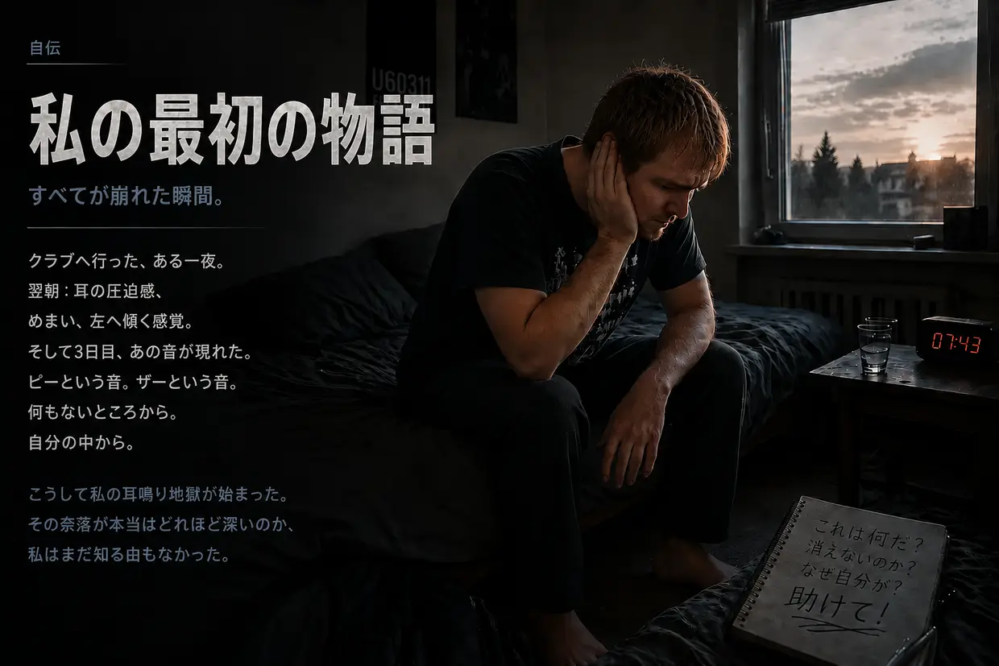
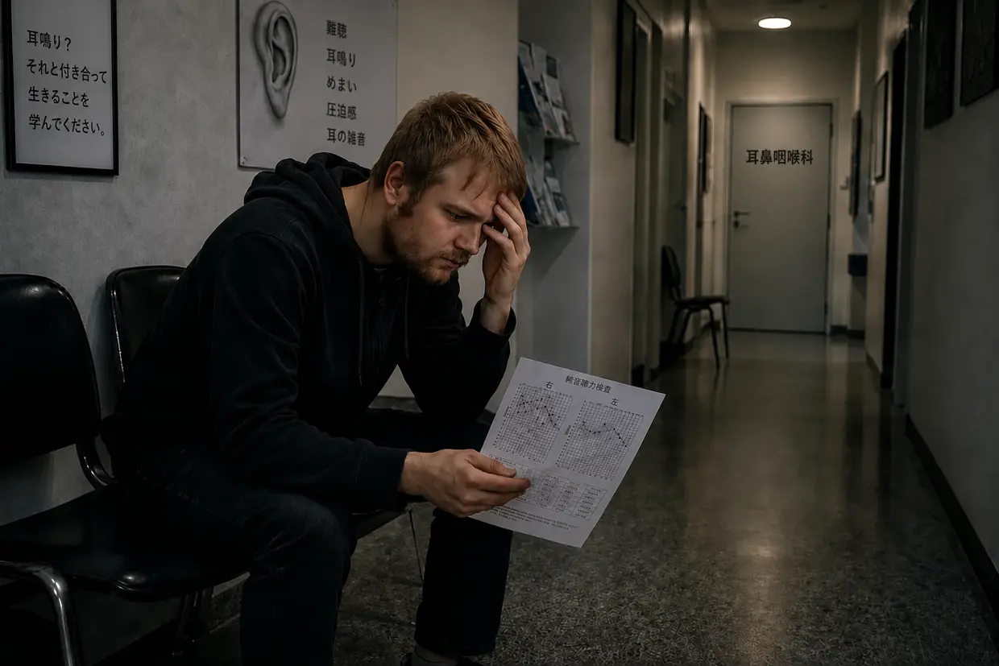
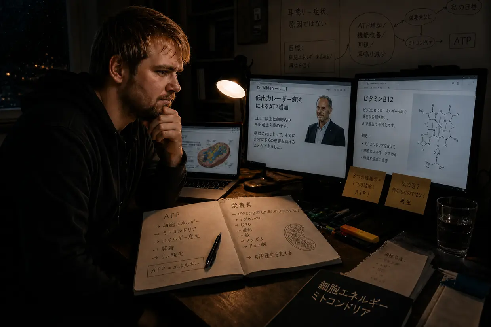
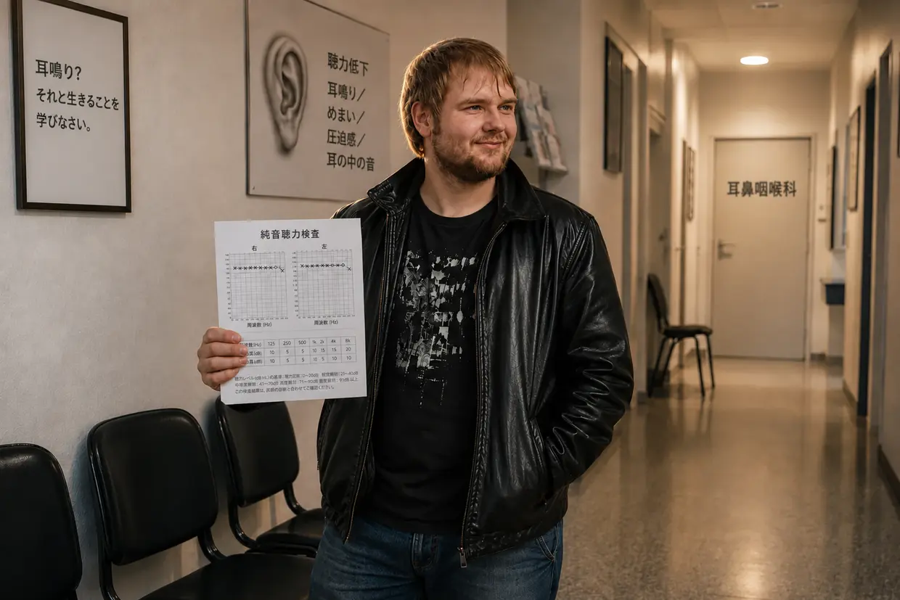

耳鳴り地獄へ落ちていった私の道のり――第1部：地獄への道
こんにちは、ダスティン・ミュラーです。かつて、それも何度も当事者だった私には、このサイトを立ち上げずにはいられないほど強い思いがありました。何年にもわたる調査、実際に行ったバイオハッキングのプロトコル、そして自分自身の経験を通じて、私が個人的にどう完全な回復へたどり着いたのかを、同じ苦しみを抱える人たちに伝えたいのです。けれど、そのメカニズムへ深く入る前に、そもそもすべてが私の身にどう始まったのかを話さなければなりません。それは医学的な偶然などではなく、真正面からの激突でした。
短い版を探していますか？ この長編版では、オージオグラム、耳鼻咽喉科への受診、一つひとつの突破口まで、すべての細部に踏み込みます。もっとコンパクトに読みたいなら、短編版へどうぞ。
2011年秋：無敵だと思っていた身体と、積み重なっていた負荷
23歳で、エネルギーは無限にあり、身体は何でも受け止めてくれると思っている。私は耳にも、まさにその考え方で接していました。音楽が大好きでした。何年もの間、閉じた自室のドア越しに両親にも聞こえるほど大音量で、ヘッドホンから音楽を聴いていたのです。知らないうちに、システムはすでに「煮崩れて」いました。
すべては従兄弟がきっかけでした。本格的なディスコへ行ったことがなかった私に、フランクフルトのU60311へ一緒に行こうと言ったのです。嫌な予感はしました。それでも承諾しました。階段を下りる時点で、低音が肉体に叩きつけてくる凄まじさを感じました。中に入ると、私は世間知らずにも「一番いい」と思った場所を選びました――巨大なスピーカーの真正面、約10メートル。左耳を音源へぴったり向けて。その過ちが、最初のドミノを倒しました。
翌朝：偽りの平穏
背後で扉が閉まった時点で、耳にはとんでもない圧迫感がありました――左側ははるかに強烈でした。すべてが水中のように、こもって聞こえました。従兄弟は、普通のことだからまた治ると言いました。酔っていた私は、そのままベッドへ倒れ込みました。翌朝、起き上がろうとした瞬間、枕へ叩き戻されました――平衡感覚のシステムが壊れ、身体が機械的に激しく左へ引っ張られたのです。
自分の身体の再生力を心の底から信じ切っていたので、私はほとんど笑い話のように受け止めていました。時間が何とかしてくれる。そして実際、そう見えました。2日目には左へ引っ張られる感覚が改善し、圧迫感もほぼ消えました。私はほっとしました――逃げ切れたと思ったのです。
3日目：怪物が目を覚ます
ディスコから3日目。目を覚ますと突然、冷蔵庫が鳴らす電子音のような音が聞こえました。何なんだ、これは？ 壁へ頭を近づけました。コンセントに耳を澄ませました。コンピューターも目覚まし時計も確認しました。何もない。そして両手で耳を塞ぎました。
くそっ。自分の中から聞こえる。頭の中にある。
私は何分もの間、衝撃で立ち尽くしていました。これは何だ？ このまま残るのか？ 左耳には、ブーンという音、ザーッという音、サイレン、そして大きなピー音。この時点で右にも、すでに小さなピー音を感じていました。衝撃のさなかでも、私は思っていました。きっとまた消える。
ソフトウェアが毒される（14日という期限）
インターネットで調べ始めると、わずか数分で答えに突き当たりました。突発性難聴と内耳損傷。後遺する聴力低下、そしてしばしば耳鳴り。さらに、血の気が凍るような一文が目に入りました。「14日以内に治療しなければならない。そうしなければ慢性化し、一生抱えることになる」。tinnitus.deのフォーラムでは、それと5年間暮らしている人たちのスレッドを読みました。5年？ なんてこった。身体の故障が、巨大な心理的脅威へ変わりました。
白衣の裏切り（最初の耳鼻咽喉科）

子どもの頃から診てもらっていた耳鼻咽喉科へ向かいました。希望。もうすぐ救われる。ディスコへ行ったことと症状を話しました。医師は、すでに少しいら立ちながら言いました。「ええ、その音に意識を向けないでください。音を覆い隠すために、少し音楽を聴きなさい」。私は食い下がりました。「でも、14日以内に治療しないといけないんですよね？ それに、さらに音を聞かせるのは本当に意味があるんですか？」医師は、「まず聴力検査をしましょう」と言って、部屋を出ていきました。私の信じていたものが崩れ始めました。
静寂の恐怖（聴力検査）
防音室へ入って初めて、自分の聴覚が実際にどれほどひどく損なわれていたのかを思い知りました。この絶対的な静けさの中では、自然に音を覆ってくれるものが一切なくなり、左耳の中の音は信じられないほど大きく聞こえました。検査は3つの部分から成っていました。耳鳴りの周波数と音量を特定すること、全般的な聴力を測ること、頭蓋骨を介した骨導を測ることです。
宣告
医師は検査結果を手にしながら、私の聴覚は恒久的に損傷していて、どうすることもできないと説明しました。衝撃を受けた私は、回復の可能性を尋ねました。医師はまた少しいら立って言いました。「それと生きることを学ばなければなりません。耳を傾けず、気をそらし、ヘッドホンを着けなさい」。ディスコへ今後も行っていいのかという、私のとんでもない質問には、「ええ、問題ありません」。それで診察は終わりました。
誓い、そして帰り道
家までの道のりは、まさに地獄でした。途方もなく重い重荷。絶望の中で一瞬、こう思いました。これを消せないなら、もう生きていたくない。ところが家へ着くと、底なしの悲しみが突然、反骨心へ変わりました。ドイツの医師が誰一人、耳鳴りとは何なのかを知らないなんて信じられない。私は拳を握りしめました。
「耳鳴りが消えるか、私が消えるかだ。こいつに自分の人生を支配させるものか。何ができるのか、自分で探さなければならない」
解決策の「ワイルド・ウェスト」

自分で調べ始めると、圧倒されるほど大量の「治療法」が出てきました。
- コルチゾンとイチョウ葉：血流を促し、炎症を抑えるもの――聴覚の回復には理にかなっているように思えました。
- 顎と首（CMD／頸椎）：筋肉の緊張が音を引き起こすという理論です。しかし私の耳鳴りは、間違いなくディスコの低音で始まっていました。私の「でたらめ探知機」が反応しました。
- TRTとマスキング：別の音で覆い隠す方法です。実際、それによって短時間だけ耳鳴りを小さくできました。しかし音を止めると、耳鳴りは以前より攻撃的に、より大きく戻ってきました。（今なら分かります。新たな音の一つひとつが、すでにエネルギーを失った有毛細胞へさらに働くことを強い、回復に使うはずだった最後のATPまで消費させていたのです。）
- 栄養補助食品：当時の私は、そういう人たちを笑っていました。なんて馬鹿なんだ、と。完全に無意味だと思っていたものに、お金まで払っている。後になって、まさにその道――本物の細胞エネルギー、ATP産生、適切な栄養素――によって自分の耳鳴りを打ち破ることになるとは、夢にも思いませんでした。
2軒目の耳鼻咽喉科：致命的な助言
2回目の耳鼻咽喉科受診の朝、耳鳴りが突然、猛烈に悪化しました。右耳にすでにあった小さなピー音も、今や明らかに大きくなっていました。（今なら分かります。医師の助言どおりに、音楽を聴き、夜にはホワイトノイズを流したことで、細胞は再び膝をつき、右耳にすでにあった音も強まっていたのです。）2人目の耳鼻咽喉科医は親切で、励ましてくれました。イチョウ葉を処方し、十分な睡眠と運動を勧めました。ヘッドホンについて尋ねると、「気をそらすためには、むしろ有利です」。（現在の細胞生物学的な視点から見れば、絶対的に致命的な助言でした。）3か月で慢性化するのかという質問には、ただこう答えました。「様子を見ましょう……耳鳴りを代償する、つまり完全に意識から消すことを学ぶこともできます」。また出てきました。真の回復を最初から除外する、あの半端な一言が。
まやかしのハムスターの回し車
そうして何日も、何週間も過ぎていきました。昼間は学校で気がそれました。夜になると、私は欺きのマスキング・ループへ逃げ込みました。ヘッドホンで音楽を聴き、滝の音を絶え間なく流しました。それで短時間は耐えられる状態にできました。しかし生物学的には、ハムスターの回し車の中を走り続けていただけでした。音の壁によって疲れ切った耳を絶え間ないストレスにさらし、細胞は物理的な修復に回すはずの最後のATPを、この人工的なノイズの処理に燃やしていました。純粋な生存モードです。
2度目の崩壊：聴覚過敏と、めまいの宙返り
ある朝、左耳に突然また、強烈な圧迫感が現れました。無視しようとして、学校へ向かいました。まだ医師の助言を信じていた私は、運転中に致命的な過ちを犯しました。カーラジオでお気に入りの曲を大音量で流したのです。その日の学校で何が待っているのか分かっていたなら、その場ですぐ引き返していたでしょう。警告サインはすでに出ていました。それでも引き返しませんでした。授業にはお金がかかっていたので、そのまま進みました。（この大音量の音楽が、完全に疲弊した細胞へ落ちた最後の一滴でした。）
1時間目、突然、強い聴覚のゆがみと、普通の音に対する痛みを伴う過敏反応が始まりました――聴覚過敏です。（今なら分かります。耳の「ショックアブソーバー」である外有毛細胞が、最後のATPを使い果たしていたのです。）その後数時間で、左耳の圧迫感はますます残酷なほど強くなりました。そして起きました。視界全体が縦方向に回転し始めたのです――頭の中で半回転の宙返りをしたように。世界が逆さまになりました。数秒後、視界は元へ戻りました。残ったのは、激しくふわふわ揺れるめまい、身体を強く左へ引っ張る感覚、左耳のこもった聞こえ方でした。（私の内耳ではイオンの滞留があまりに強くなり、隣接する平衡器官にまであふれ込んでいたのです。）
パニックの中で、何とか耐えようとしました。休み時間が始まるや否や、私は逃げ出しました。極端なめまいのため、帰りの運転では数秒おきにハンドルを戻さなければならず、無謀そのものでした。それでも、ただ安全な場所へ帰りたかった。この2度目の崩壊が、決定的な転換点になりました。もうこれ以上、ただ待ってはいられない。
3軒目と4軒目の耳鼻咽喉科：答えの代わりに薬、「幻」という嘘、そして「心理的な問題」というレッテル
その日のうちに、3軒目の耳鼻咽喉科で緊急の予約を取りました。聴力検査、嗅覚検査、そして何も変わらなかった「頭位性めまい」の検査。（今なら明らかです。遊離した耳石ではなく内リンパ水腫だったのだから、頭を揺らしても何の意味もありません。）同僚の医師が後から診断を付け足しました。「再発した突発性難聴で、14日もすれば治ります」――あるいは、副鼻腔が詰まっているせいかもしれない。症状を見て当てずっぽうに言っているだけでした。そして、とどめの一撃です。「ご存じですか、多くの人はうつ状態になります。症状が残るようなら、喜んで抗うつ薬を処方しますよ」。私は座ったまま、自分の耳を疑いました。平衡感覚のシステムが崩壊しているのに、彼女の答えは……向精神薬？ 私は心に誓いました。絶対に飲まない。
4軒目の耳鼻咽喉科――「専門医」――では、これまでの経緯をすべて話しました。細胞レベルの話へ踏み込む代わりに、冷たく返ってきたのはこうでした。「認知行動療法というものを聞いたことがありますか？ あなたの問題は、聴覚の問題へ意識を向けすぎて、それによって耳鳴りを維持していることです」。私は反論しました。「でも、この音はディスコへ行ったことで物理的に生じたんですよ！」医師はまったく反応しませんでした。コルチゾンについて尋ねると、「意味があるのは最初の14日間だけです。あなたの場合は幻の音だと考えなければなりません」。最後には再び、別の音を流すTRTを勧めました。そして、マスキングで耳鳴りがより攻撃的になると説明すると、取り合おうともしませんでした。システムは降参し、その責任を私へ押しつけたのです。
絶対的などん底：孤立とシステムの破綻
悪夢は、自分の誕生日パーティーで頂点に達しました（突発性難聴から1か月半後）。聴覚過敏と音のゆがみで、気が狂いそうでした。自分の耳鳴りがあまりに大きく、ほかの人の話し声を完全にかき消しました。そこへ奇妙な現象まで加わりました。文字の響きまで以前とはまるで違って聞こえ、「S」は「F」のように、「T」は「D」のように聞こえたのです。刺激の洪水にもう耐えられず、自分の誕生日を途中で打ち切り、家へ逃げ帰りました。その後の数日でめまいはさらに極端になり、一時は倒れそうになるほどでした――医学的には「メニエール病」に相当する複合症状です。私は完全に孤立し、外界から遮断されました。人生から見捨てられ、医師からも見捨てられました。彼らが私へ刷り込んだのは、頭がおかしくなっている、抗うつ薬が必要だ、ということだけでした。
最初の決定的体験：「幻」という嘘への反証
よりによって週末の遅い時間、感染による外耳道炎が起きました。仕方なく、フランクフルト大学病院の救急外来へ身体を引きずっていきました。耳鼻咽喉科医は、ごく小さな吸引器を手に取り、左右の外耳道を順番に吸引しました。そして、まさにその瞬間、決定的な体験が起きたのです。左耳の中で鋭い騒音が荒れ狂うと、同時に、そこの耳鳴りがその音へ攻撃的かつ爆発的に反応するのを感じました。その後の右耳でも、まったく同じでした。
自分の身体を使った、完璧なA/Bテストでした。私の頭の中で、「専門医」の発言が粉々に崩れました。心理的な幻の音が、それぞれの外耳道へ加わった純粋に機械的な騒音刺激へ、同時に反応するはずがない！ この反応は、私にとって絶対的な証拠でした。誤作動する発生源は、まだ耳の奥に存在している。細胞は騒音を受けた瞬間、助けを求めて叫んだのです。
コルチゾン点滴と、ガーゼ包帯の奇跡
耳鼻咽喉科医は何気なく、突発性難聴からどのくらいたつのかと聞きました。2か月です。まだ魔法の3か月という期限内なので、コルチゾンを試す価値があるとのことでした。私は即座に同意し、病棟で一夜を過ごしました。病院のベッドでも調べ続け、ある耳鳴り患者が自ら作ったウェブサイトへたどり着きました。そこに書かれていたことは、細胞生物学的に筋が通っていました。さらなる騒音は耳鳴りを劇的に悪化させる。そしてDr. Wildenと、細胞のATP産生を狙って刺激する低出力レーザー療法へのリンクもありました。吸引器での体験と100％一致していました。
3日後、外耳道炎のため両耳へ分厚いガーゼ包帯を詰めたまま退院しました。その数日のうちに、すでに気づいていました。耳鳴りが明らかに小さくなっていたのです！ 最初はコルチゾンのおかげだと思いました。しかしDr. Wildenのサイトで、積極的に静寂を求めることがどれほど根本的に重要なのかを読んだ瞬間、雷に打たれました。私の耳は何日もの間、ガーゼ包帯によって強く遮音されていた！ 普通の耳鼻咽喉科医なら、これほど徹底して耳を塞ぐことなど絶対にしなかったでしょう。絶対的な静けさには効果がある。その証拠を、私は意図せず手に入れていたのです。

爆発音、変動性、そして絶対的な静寂のプロトコル
数日後、もう一つ重要なことに気づきました。耳のすぐそばでクリームの小瓶を使っていたとき、突然、大きな破裂音がしました。一瞬で耳鳴りがわめき出しました――しかし、ごく短時間で「通常」の水準へ戻りました。私にはっきり分かりました。耳鳴りは「固定されたもの」ではなく、極端に動的だったのです！ 騒音へリアルタイムで反応して悪化し、徹底して静寂を求めると小さくなりました。
私はそこから、徹底した行動に出ました。それ以降、意識して可能な限り多くの時間を完全な静寂の中で過ごしました。音楽、映画、友人との集まりは、日常からまれな「ご褒美」へ変わりました。そして楽しむ場合も、ヘッドホンは厳禁、ごく小さな音で、ごく短時間だけでした。
6か月の静寂――そして25％で止まった回復
本当に、耳鳴りは月を追うごとに小さくなりました。振り返れば、約8か月後には音量が4分の1ほど減っていました。とはいえ、この完全な静寂を100％完璧に守り抜けるはずもありません。必要な車での移動（往復200km）だけでも、耳鳴りは再び大きな水準へ達しました。ほぼ丸1週間の安静が「無駄」になったようなものでした。
そして、苛立たしいことが起きました。約20～25％改善したところで、回復が突然止まったのです。私は孤立を極限まで進めました。会話を避け、常に耳栓を着け、カチカチ音を立てる壁時計まで部屋から追放しました。それでも、もう何も動きませんでした。ゼロ。
アトラス矯正、CMD、頸椎――袋小路
そこで、顎、頸椎、耳鳴りの関係をもう一度、徹底的に調べようと思いました。CMD（顎関節機能障害）を知り、歯科でスプリントを作ってもらいました。整形外科センターでは頸椎症候群と診断され、筋力トレーニング（Med X）を処方されました。静寂を保ちながら、両方を鉄の意志で続けました。2か月後、厳しい現実が見えてきました。CMDと頸椎の症状は改善した――しかし耳鳴りは、まったく、何ひとつ変わりませんでした。
最後のわらにもすがる思いで試したのが、アトラス矯正でした。200km車を走らせ、ハイルプラクティカーのもとへ行きました。彼は特殊な装置と手技で、ずれていた第1頸椎を元の位置へ戻しました。それも数週間後には――何の効果もありませんでした。唯一の副産物として、そのハイルプラクティカーは慢性胃炎に対し、サイリウムハスク、鉱物土の混合物、プロバイオティクスを勧めました。そして本当に、ほぼ1年もの間しぶとく続いていた胃粘膜炎が消えました。私は衝撃を受けました。現代医学は失敗し、ハイルプラクティカーは結果を出したのです。
ビタミンB12――最も重要な（偶然の）決定的体験
当時、父は多発神経障害に苦しんでいました。かかりつけ医は重度のビタミンB12欠乏を診断し、注射を処方しました。ある晩、父が私の目の前でアンプル1本を注射すると、少ししてこう言いました。痛みが減り、また身体が温かくなった。こんな小さな赤いアンプルが、これほど肉体的な変化を起こすのか？
私は調べ、こう読みました。B12は「神経のビタミン」だ。菜食主義者（私は15歳からそうでした！）と慢性胃炎の患者（私の胃炎はつい最近治まったばかりでした）は、特にリスクが高い。かかりつけ医で血液検査を受けると、値は正常範囲の最下限で、本当の欠乏まであとわずかでした。しかし医師は、「まだ正常範囲だから」と注射を拒みました。私は肩を落として診療所を出ました。
その晩、父が次のB12注射を必要としたとき、私は勇気を振り絞り、自分にも打ってもらいました。重要：医師の管理なしにこれをまねするのは、はっきりやめたほうがいいと言っておきます。すごい――数分後には血流が良くなる感覚、心地よい温かさ、頭が澄む感覚がありました。私はくつろいだ気分でベッドへ入りました。
翌朝。絶対的な奇跡が起きました。目を覚まして数秒で、すぐ分かりました――耳鳴りが猛烈に小さくなっていたのです！ 25％の改善から突然、40％を超える改善へ。私は言葉を失い、涙が出そうになりながら横たわっていました。日中にはまた悪化しました――それでも以前の水準までは戻りませんでした。そして次の朝も、再び40％。
Dr. Wildenのサイトには、彼のレーザーが細胞内のATP産生を狙って刺激すると書かれていました。そしてB12は、まさにそのATP産生に不可欠です。カチッ！ もしかすると、高価なレーザーなど必要ない。特定の栄養素によってATP量を増やせる。
胆石発作とレシチンの奇跡（当時の私のミエリンモデル）
米国から高用量のマルチビタミン製剤が届くのを待っている間に、次の災難が襲いました。胆石による胆石発作です。夜間の救急外来で、女性医師が提示したのは手術だけでした――胆嚢を切除する。私は拒否し、自分の責任で家へ帰りました。
またインターネットで調べました。ある当事者は、レシチン顆粒を何か月も摂取したことで、胆石が完全に溶けたと報告していました。翌日にはそれを手に入れ、30g摂りました。すると実際に、右上腹部の圧迫感が弱まっていくのを感じました。重要：胆石がある場合は、必ず医師の管理を受けてください。ここに書いているのは、急性の状況での私個人の体験であり、ほかの人への治療助言ではありません。
しかし、本当のハイライトは3日後に来ました。B12注射＋レシチン顆粒の後、再び奇跡が起きたのです。翌日には、出発点と比べて60～65％の改善！ 何か月もの停滞の後でした。私は調べ、当時こういうモデルを組み立てました。レシチンはミエリン層（神経の絶縁）の中心的な材料だ。研究によれば、騒音性耳鳴りではまさにその絶縁が損なわれる。「細い電線を覆うプラスチックの保護材が壊れたような状態だ」。そしてB12は、ミエリン鞘の再生に最も重要なビタミンだという。なんてことだ――必要なのはATPだけではない。材料も必要なんだ！ 今では、このメカニズムを一つに決めつけず、もっと幅を持って捉えています。聴神経やミエリンが関与した可能性は今もあると思いますが、私自身について確実に証明することはできません。間接的な経路も考えられます。レシチンのコリンがアセチルコリンの材料となり、それを介して副交感神経、深い睡眠、再生を支えたのかもしれない。あるいはレシチンが、複数の経路から同時に細胞修復を速めたのかもしれない。両方が重なった可能性もあります。
80％への突破（ビタミンB群バイパス）
レシチン、マルチビタミン製剤、B12注射によって回復は進みました――しかし耳鳴りは約70％改善したところで止まりました。私が疑ったのは、ほかのビタミンB群が十分に吸収されていないことでした。B1とB2はアンプルで、B3、B5、B8は高用量の錠剤で手に入れました。そして、よし、よし、よし！ 週を追うごとに、さらに小さくなっていきました！ ディスコから16～17か月目、耳鳴りは本当に20％しか残っていませんでした（つまり80％改善）。しかし、またしても停滞しました。
最終的な回復：細胞への「カーペット・ボミング」
取りつかれたように調べ、当時こう結論づけました。B12とレシチンだけでは、考え方があまりに小さすぎた。私が想定していたミエリン修復や、そのほかの細胞の構築過程には、身体がさらに大量の栄養素を必要としている――オメガ3（DHA／EPA）、アミノ酸、ビタミンC、脂溶性ビタミンA／D／E／K、ミネラル。私はまさに、自分の身体へ浴びせかける勢いで摂りました。週2回のビタミンB群注射、週3～4回のレシチン30g、毎日のアミノ酸粉末、オメガ3を3g、高用量ビタミンC、Life Extensionのミネラル混合物、NOW Foodsのマグネシウムと亜鉛、毎日LaVitaをグラス1杯、さらにDr. Rathのマルチビタミン錠剤。分子整合栄養学的な「カーペット・ボミング」です。
フェードアウト、そして悪夢の終わり（100％の回復）
完全な栄養スタックによって、動きは決定的に変わりました。当時の私のモデルでは、身体は今やATPエネルギーと、材料の全ラインナップの両方を手にしていました。修道僧モードと組み合わせることで、ようやく本来の仕事ができるようになったのです。現在は、より良いエネルギー供給を主なレバーだと見ています。同時に、栄養素は重要な補因子と材料を供給し、この過程をさらに速めた可能性があります。初めの頃と同じでした。朝は睡眠によって細胞のバッテリーが満充電され、最良の状態。夜には一日の疲労によって、耳鳴りがまた大きくなりました。しかし静寂は、日中へ絶え間なく深く食い込んでいきました。最初は昼まで音が消えました。次は午後まで。夜の落ち込みは、次第に弱く、短くなっていきました。
そして、あの最後の朝が来ました――決して忘れません。目を覚ました一瞬のうちに感じました。頭の中が、いつもと違う。クリスマスの子どものように興奮し、心臓を激しく鳴らしながら、耳栓を耳の奥深くへ押し込みました。耳を澄ませました……そこには、本当に何もありませんでした。
調光つまみは、ついにゼロで止まりました。朝も、昼も、夜も――もう何もない。ほぼ2年間、知らなかった自然で穏やかな静寂だけ。耳鳴りは消えました。完全に消えたのです。
この感覚は言葉にできませんでした。究極の安堵と、絶対的な達成感が、深く温かく身体を満たしました。私は勝った。諦めず、「それと生きることを学びなさい」と言った医師たちに打ち勝ち、最後には高価なレーザーさえ必要としなかった。私の身体が自ら修復した――結果は現実でした。耳鳴りは完全に消えたのです。当時の私は、そのメカニズムをこう説明していました。ミエリン層が再生し、有毛細胞のアクチン骨格が立ち上がり、接触不良が直り、脳が緊急用の増幅器（中枢性ゲイン）を切った。現在は、エネルギー供給を細胞再生の主なレバーと見ており、とりわけ有毛細胞、その不動毛、細胞膜に注目しています。ミエリンや聴神経が関与した可能性は今もあると思いますが、私自身について確実に証明することはできません。生物学が勝ったのです。
その朝、まだ知らなかったことがあります。何か月も後、別の致命的な連鎖反応によって、私の身体は最重度のCFS（慢性疲労症候群）へ墜落することになります。しかし「治らない」とされたものさえ、自ら治すことができる――その確信を、私は次の地獄へ持っていきました。
物語は、ここではまだ終わりません。最初の勝利の後に来たものこそ、本当の過酷な試練でした――そして、私の生物学的モデルが本当に機能することを示すための、意図的で狂気じみた証明でした。
